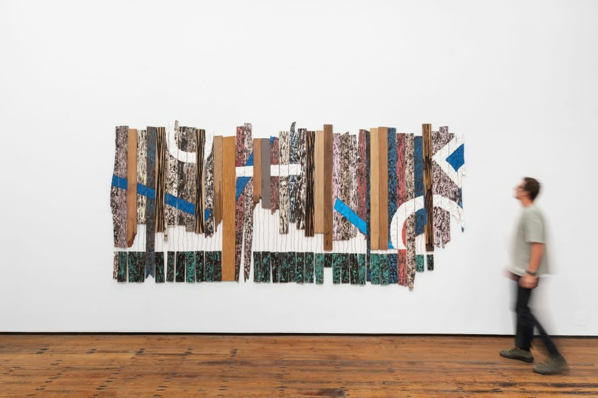

Current Exhibitions
Sleepy Dreams

An immersive exhibition exploring the intersection of art and science. A space where visitors are able to experience artistic mediums that induce sleep on an emotional level. Heavily studied by psychologists, this exhibition provides mystery and an intriguing side effect.
Fun Fragments

A collection of modern installations that challenge perception, space, and perspective. This exhibit blends sculpture and light to decipher pieces of one artwork. By splitting thier work, artists draw in their viewer bit by bit.